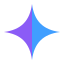

A0原版基准 Baseline
按你概念板复刻，仅用于对比浅底 / 深底
侧边栏实景
Fusion数智业务中台
几何：四角星，臂长 28，凹口最深点距中心 8.0（半径的 28.6%）。 已知短板：① 16px 会糊；② 只讲 AI 不讲融合；③ 通用符号缺自有细节；④ 紫色不在主题色内。
A 最实际的问题是：凹口太深，缩到 16px 时四个尖角会互相糊掉。
下面把每一版按 16×16 渲染后放大 5.75 倍，直接看还认不认得出。
更严格的一份在 preview-16px-raster.png：那里用 canvas 把 SVG 真实绘制成
16×16 像素后再放大（无矢量重绘的水分），结论以上面那份为准。
| 版本 | 浅底 16px | 深底 16px | 凹口深度 | 判断 |
|---|---|---|---|---|
| A0 原版 基准 |
8.0 28.6% 半径 |
四臂发虚不等长，一团糊影 | ||
| A1 厚腰星 | 11.95 42.7% 半径 |
能看出是四角星，但四角仍未锐利 | ||
| A2 双色融星 |  |
11.95 同 A1 |
16px 下左右两色仍可分（色差比形状耐缩小） | |
| A3 星核 | 11.95 同 A1 |
白核在 16px 下反而成为识别点（高反差） | ||
| A4 星入方盒 | 11.95 同 A1 |
带底色，两底一致清晰 | ||
| A5 火花方块 | — 镂空 |
方块＋火花都成型 |
深底 #0E1622，图标 100px
#8B5CF6），但它
不在项目主题色内（主题只有 app.ts 的 elColorPrimary #409EFF）。
若不扩品牌色，把紫换成 #36CFC9 或直接改成纯蓝即可，形状完全不动。
浅底 / 深底
侧边栏实景
几何：四角星，臂长 28，凹口最深点距中心 8.0（半径的 28.6%）。 已知短板：① 16px 会糊；② 只讲 AI 不讲融合；③ 通用符号缺自有细节；④ 紫色不在主题色内。
浅底 / 深底
真实尺寸 · 上浅底下深底
侧边栏实景
只改一处：凹口由 8.0 抬到 11.95，曲线控制点由 p=0.75/q=5.0 改为 p=2.2/q=11.0。 剪影仍是四角星，但腰部有了"肉"。真实 16px 光栅化下：从「四臂发虚的一团糊影」 变成「能看出是个四角星、但四角仍不锐利」——即从"看不清"提升到"认得出"， 谈不上清晰。代价是略敦实。若 favicon 要真清晰，请用 A4 / A5。
浅底 / 深底
真实尺寸 · 上浅底下深底
侧边栏实景
剪影一个点都没改（沿用 A1 几何），只沿中轴把星切成左右两色： 两半合成一颗星 ＝ 融合。零成本补语义，且色差比形状细节更耐缩小，16px 下分界仍可见。
浅底 / 深底
真实尺寸 · 上浅底下深底
侧边栏实景
中心压一颗白核（沿用你 B/C/D 里的白点语汇）， 四臂于是读作「向心汇入核心」，补 AI 核心语义＋自有细节。 白核半径 6.5 < 凹口 11.95，不会顶穿边缘（留 5.45 余量）。
浅底 / 深底
真实尺寸 · 上浅底下深底
侧边栏实景
沿用你 B 的做法：品牌渐变圆角方盒 + 白色星。三点好处： 自带底色因而放任何背景都成立；与主流 App 图标形态一致（favicon 直接可用）；白星彩底对比度天然达标。
浅底 / 深底
真实尺寸 · 上浅底下深底
侧边栏实景
把 A（四角星）与 B（渐变方块＋白点）合成一套：方块做渐变底，中心
镂空一颗四角火花（evenodd 挖洞，不是叠加白星）——
底色透出来更透气、更有做工感。火花放大到 17 半宽，保证 16px 仍成型。